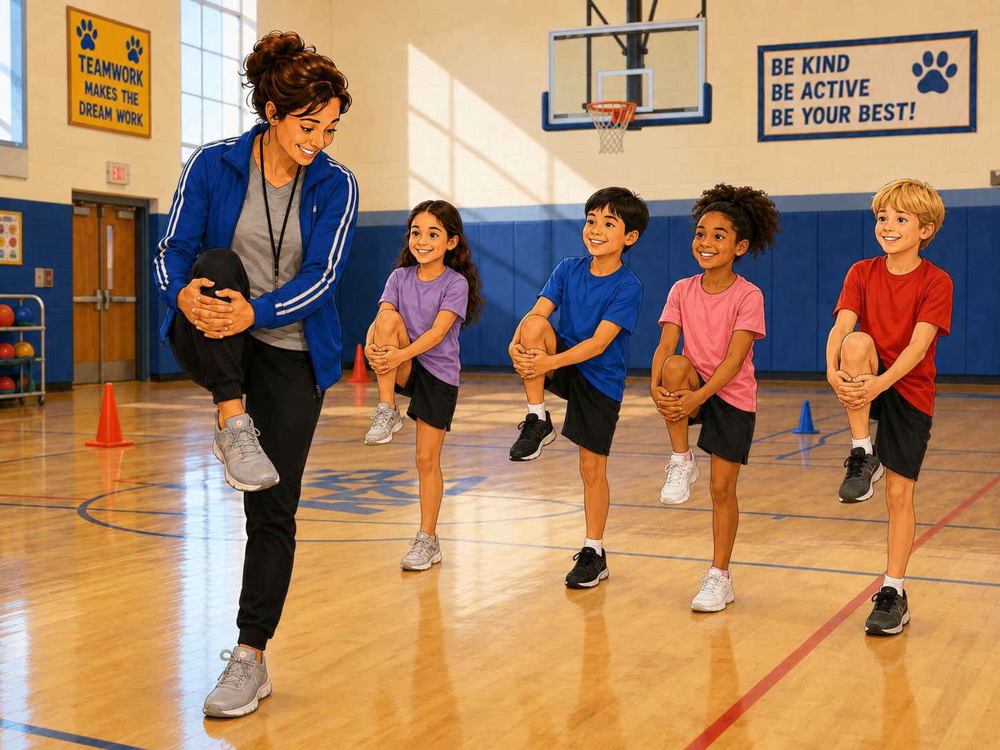
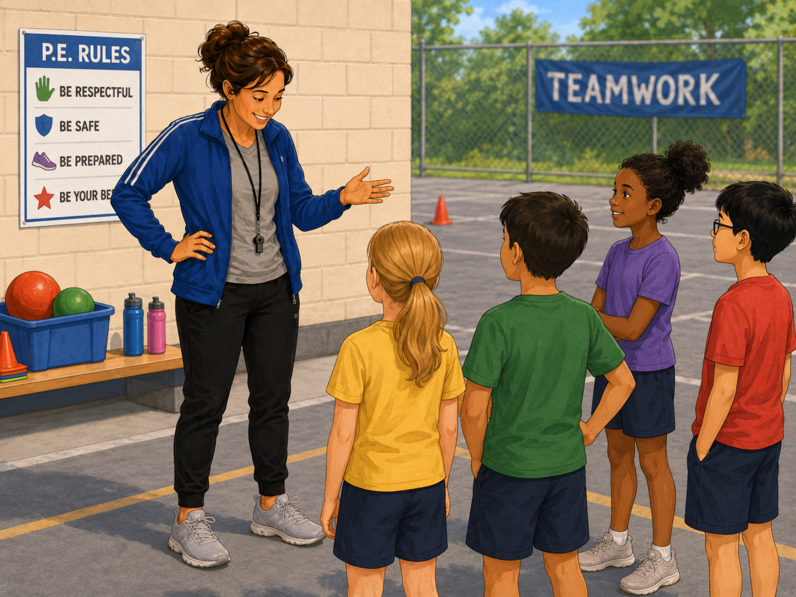
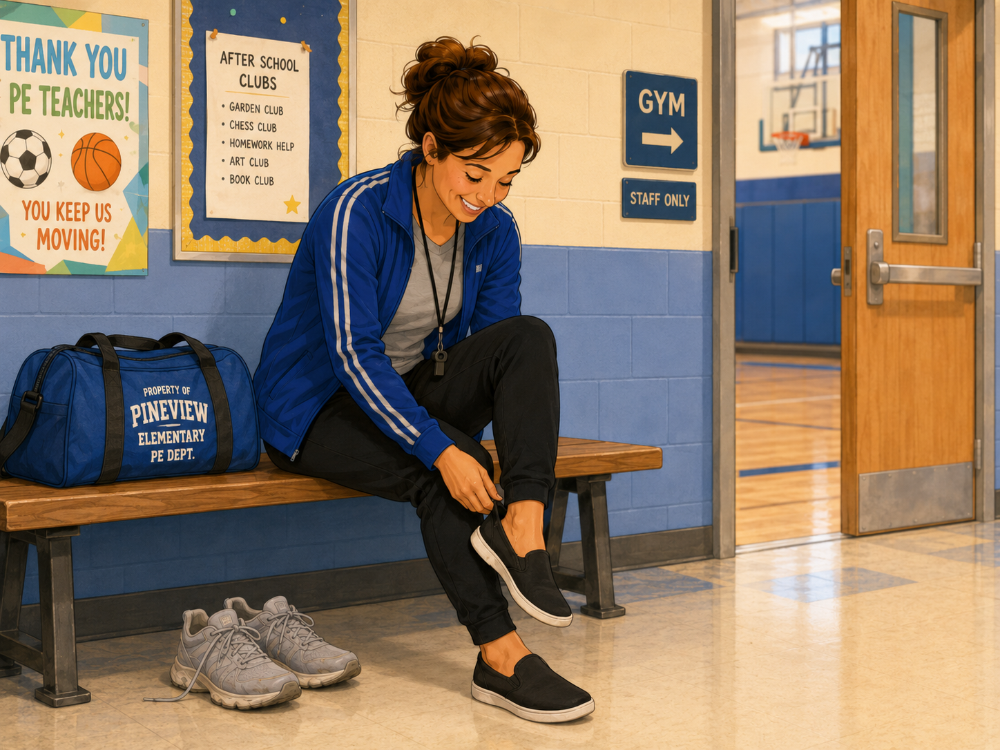
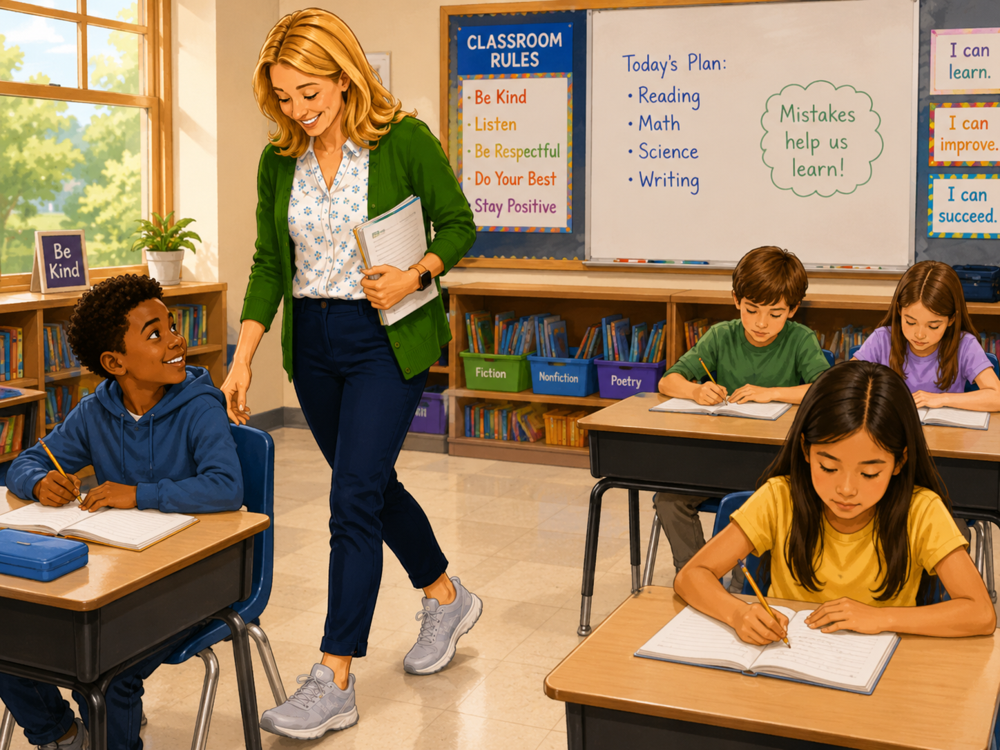
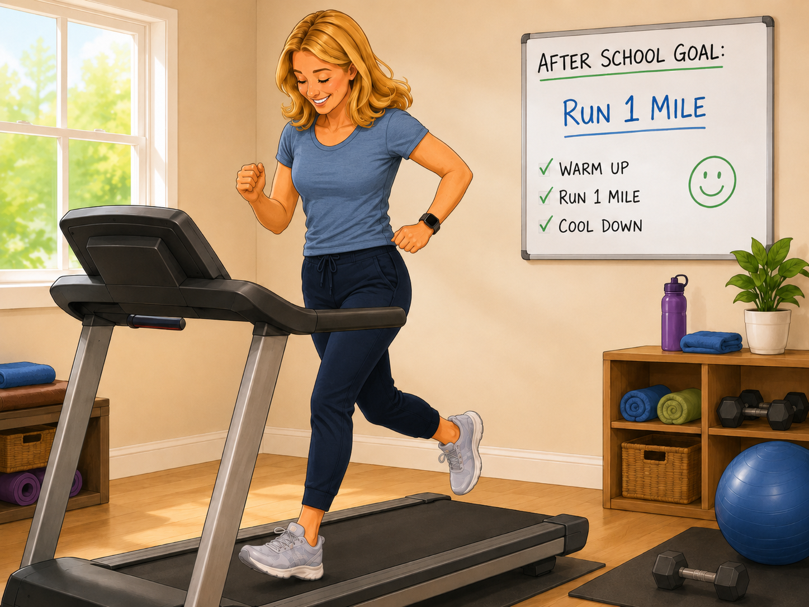
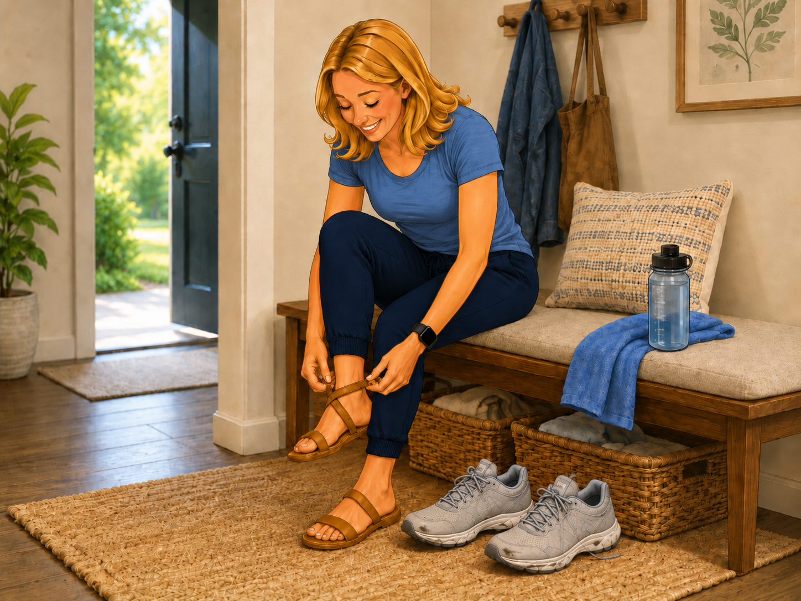

Today, we are the investigators. Before we make a guess, let's look for evidence together.
Lyra notices that Mrs. Brown, the PE teacher, and Ms. Allison, the 4th-grade teacher, were comparing their sneakers in the hallway.
They said they bought the same kind of sneakers on the same day at the beginning of the school year, but now the shoes look different. One pair looks much more worn than the other.
One pair looks much more worn than the other.
Ms. Allison says, "Whoa… our shoes look really different."
Mrs. Brown says, "They really do."
Mrs. Brown jokes, "That surprises me because I teach PE all day."
Lyra brings the mystery back to class. Your teacher says:
"Before we make a guess, let's look for evidence."
What evidence should we prioritize first?

Mrs. Brown demonstrates warm-ups and walks around the gym and playground.

She sometimes stands and gives directions during class.

She changes shoes after school. Her sneakers show some wear, but nothing extreme.
Based on the evidence we collected, what helps explain Mrs. Brown’s sneaker wear?

Ms. Allison walks around the classroom and during transitions and duty.

She runs one mile on a treadmill after school in the same sneakers.

She changes into sandals after running. Her sneakers show heavy wear.
Based on the evidence we collected, what helps explain Ms. Allison’s sneaker wear?
Today was a practice case. In the full Stories in Science lessons, you will become part of a science story. You will make choices, collect evidence, and explain what you think is happening.
In each lesson, we will use the same routine:
Different choices may lead you to different evidence.
© 2026 Brooke Toon. All rights reserved. This lesson is part of the Stories in Science Framework developed by the author. Generative AI tools were used to support the development of this instructional material. This content may not be reproduced, distributed, modified, or used for commercial purposes without permission.